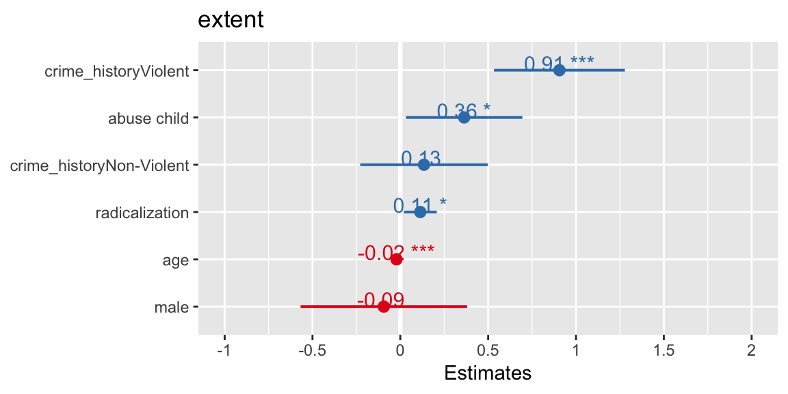
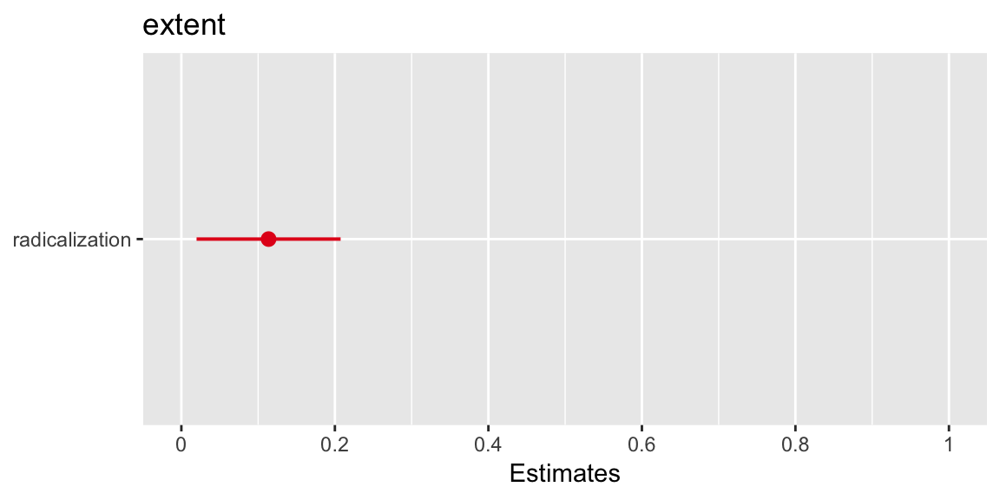
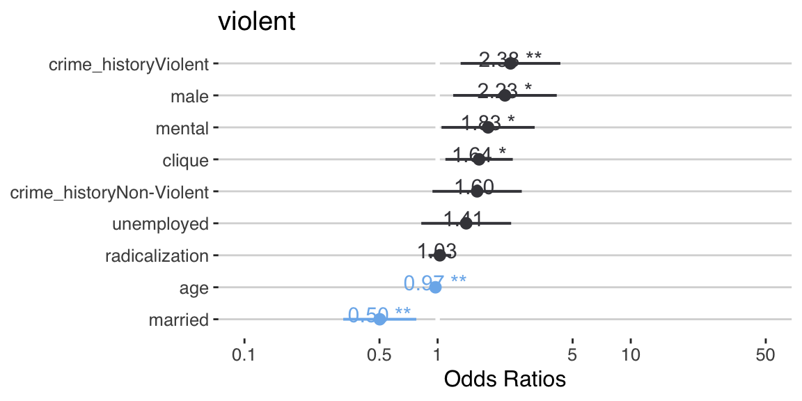
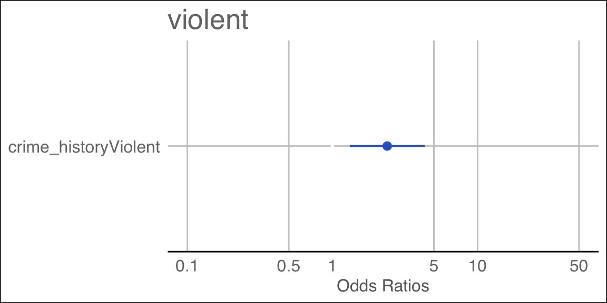
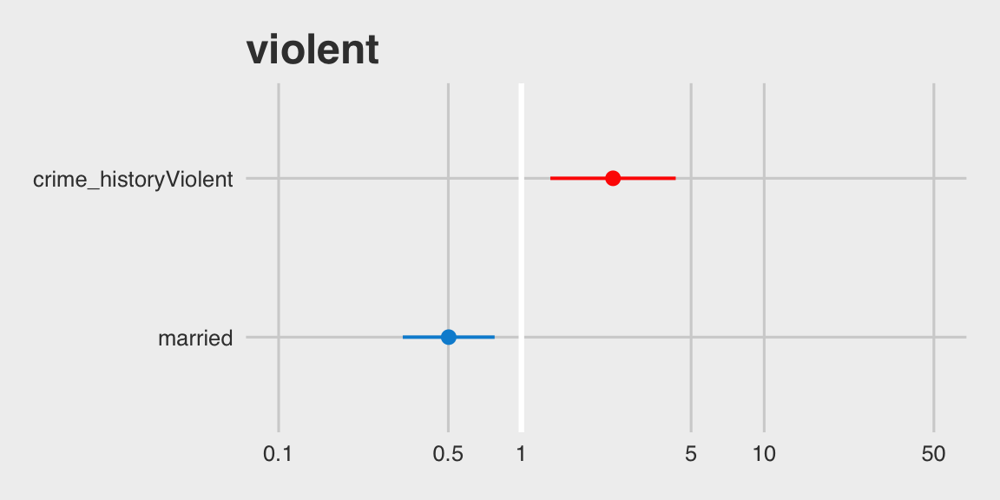
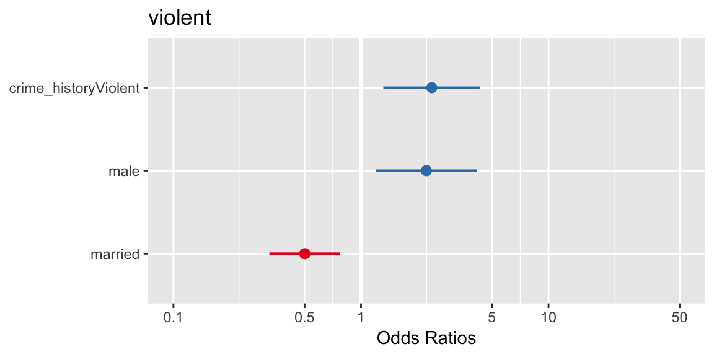

Chapter 5 Analysis
Dieser Notebook repliziert einen Research Report vom Januar 2018 zu Gewalt von extremistischen Straftätern. Die Daten sind frei zugänglich hier. Der Report welchen wir replizieren ist hier hinterlegt und trägt den Titel: Pre-Radicalization Criminal Activity of United States Extremists
5.1 Packages
pacman::p_load(tidyverse, janitor, ggthemes, texreg, sjPlot)5.2 Load Data
recode_missings <- function(x) {
ifelse(x %in% c(-88, -99), NA, x)
}
start_pirus <- openxlsx::read.xlsx("start_pirus_2018.xlsx") %>%
janitor::clean_names() %>%
mutate_all(recode_missings) %>%
mutate(
terror_type = case_when(
radicalization_islamist == 1 ~ "Islamism",
radicalization_far_right == 1 ~ "Far Right",
radicalization_far_left == 1 ~ "Far Left",
radicalization_single_issue == 1 ~ "Single Issue"
) %>%
forcats::fct_relevel("Single Issue")
) %>%
mutate(unemployed = ifelse(employment_status %in% 2:3, 1, 0)) %>%
mutate(married = ifelse(marital_status == 2, 1, 0)) %>%
mutate(male = ifelse(gender == 2, 1, 0)) %>%
mutate(mental = ifelse(psychological %in% 1:2, 1, 0)) %>%
mutate(
crime_history = case_when(
previous_criminal_activity == 0 ~ "None",
previous_criminal_activity == 1 ~ "Non-Violent",
previous_criminal_activity == 2 ~ "Non-Violent",
previous_criminal_activity == 3 ~ "Violent"
) %>%
forcats::fct_relevel("None")
) %>%
mutate(date = as.Date(date_exposure, origin = "1899-12-30")) %>%
select(
subject_id,
date,
age,
male,
gender,
married,
student,
unemployed,
mental,
abuse_child,
crime_history,
violent,
extent = extent_plot,
terror_group = terrorist_group_name1,
radicalization = radical_beliefs,
clique,
terror_type
) %>%
as_tibble() %>%
mutate(date = as.Date(date, origin = "1899-12-30")) %>% #origin="1970-01-01")) %>%
mutate(year = lubridate::year(date))
#save(start_pirus, file = "start_pirus.Rdata")load("start_pirus.Rdata")
start_pirus %>%
glimpse## Observations: 1,865
## Variables: 18
## $ subject_id <dbl> 1000, 1001, 1002, 1005, 1006, 1010, 1013, 1014, 1…
## $ date <date> 2002-05-08, 2001-11-25, 1997-05-01, 1993-04-10, …
## $ age <dbl> 32, 20, 28, 25, 25, 27, 23, 28, 26, 25, 25, 24, 3…
## $ male <dbl> 1, 1, 1, 1, 1, 1, 1, 1, 1, 1, 1, 1, 1, 1, 1, 1, 1…
## $ gender <dbl> 2, 2, 2, 2, 2, 2, 2, 2, 2, 2, 2, 2, 2, 2, 2, 2, 2…
## $ married <dbl> 1, 0, 1, 1, 0, 1, 1, 1, 1, 1, 0, 0, 0, 1, 0, 0, 0…
## $ student <dbl> 1, 1, 0, 0, 0, 0, 0, 0, 0, 0, 0, 1, NA, 1, 0, 0, …
## $ unemployed <dbl> 0, 0, 0, 0, 0, 0, 1, 0, 0, 0, 1, 0, 1, 0, 0, 0, 0…
## $ mental <dbl> 0, 0, 0, 0, 0, 0, 0, 0, 0, 0, 0, 0, 1, 0, 0, 0, 0…
## $ abuse_child <dbl> 0, 0, 0, 0, 0, 0, 0, 0, 0, 0, 0, 0, 0, 0, 0, 0, 0…
## $ crime_history <fct> Violent, None, Violent, None, NA, NA, Non-Violent…
## $ violent <dbl> 1, 0, 0, 1, 1, 1, 1, 1, 1, 1, 1, 1, 1, 1, 1, 1, 1…
## $ extent <dbl> 2, 0, NA, 5, 5, 2, 0, 0, 0, 0, 0, 0, 1, 0, 0, 0, …
## $ terror_group <chr> "al-Qaeda core", "Taliban", "al-Qaeda core", NA, …
## $ radicalization <dbl> 4, 5, 5, 5, 5, 5, 2, 2, NA, 2, 5, 3, 2, 5, 5, 5, …
## $ clique <dbl> 1, 1, 1, 1, 1, 1, 1, 1, 1, 1, 1, 1, NA, 1, 1, 1, …
## $ terror_type <fct> Islamism, Islamism, Islamism, Islamism, Islamism,…
## $ year <dbl> 2002, 2001, 1997, 1993, 1993, 2003, 2002, 2002, 2…5.3 Lineare Regression
Eine lineare Regression wird auf folgende Weise durchgeführt:
lm(extent ~ radicalization, data = start_pirus) ##
## Call:
## lm(formula = extent ~ radicalization, data = start_pirus)
##
## Coefficients:
## (Intercept) radicalization
## 1.6413 0.1233Genauso wie alles andere in R können wir auch eine lineare Regression in ein Objekt packen:
model1 <- lm(extent ~ radicalization, data = start_pirus)
model1##
## Call:
## lm(formula = extent ~ radicalization, data = start_pirus)
##
## Coefficients:
## (Intercept) radicalization
## 1.6413 0.1233Die lineare Regression in ein Objekt zu packen hilft uns dabei die Resultate der Regression näher unter die Lupe zu nehmen.
screenreg aus dem texreg package gibt uns eine schöne Regressiontabelle aus:
htmlreg(model1) %>% shiny::HTML(.)| Model 1 | ||
|---|---|---|
| (Intercept) | 1.64*** | |
| (0.15) | ||
| radicalization | 0.12*** | |
| (0.04) | ||
| R2 | 0.01 | |
| Adj. R2 | 0.01 | |
| Num. obs. | 1651 | |
| RMSE | 2.19 | |
| ***p < 0.001, **p < 0.01, *p < 0.05 | ||
Aufgabe
Versucht einmal eine Regresion durchzuführen in der ihr extent (AV) mit crime_history (UV) versucht zu erklären.
Als nächstes wollen wir eine kleine Analyse gemeinsam ausführen. Ziel ist es zu erklären wie sich der Radikalisierungsgrad (radicalization) einer Person auf die Fortgeschrittenheit der Planung einer extremistischen Tat (extent) auswirkt. Dazu nehmen wir auch einig Kontrolle heran:
abuse_childcrime_historyagemale
1. Schritt: eigenen Datensatz für die Analyse erstellen und alle NAs (missing values) rauswerfen (drop_na)
start_lm <- start_pirus %>%
drop_na(radicalization, age, male, abuse_child, crime_history)drop_na entfernt alle Fälle welche in den obigen Variablen ein NA haben
2. Schritt: Bauen wir ein sequentielles Modell
model1 <- lm(extent ~ radicalization, data = start_lm)
model2 <- lm(extent ~ radicalization + abuse_child + crime_history, data = start_lm)
model3 <- lm(extent ~ radicalization + abuse_child + crime_history + age + male, data = start_lm) 3. Schritt: Resultate darstellen
screenreg erlaubt es uns auch mit list mehrere Modelle zu übergeben:
htmlreg(list(model1, model2, model3)) %>% shiny::HTML(.)| Model 1 | Model 2 | Model 3 | ||
|---|---|---|---|---|
| (Intercept) | 1.76*** | 1.59*** | 2.27*** | |
| (0.20) | (0.21) | (0.33) | ||
| radicalization | 0.10* | 0.09 | 0.11* | |
| (0.05) | (0.05) | (0.05) | ||
| abuse_child | 0.41* | 0.36* | ||
| (0.17) | (0.17) | |||
| crime_historyNon-Violent | 0.02 | 0.13 | ||
| (0.18) | (0.19) | |||
| crime_historyViolent | 0.84*** | 0.91*** | ||
| (0.19) | (0.19) | |||
| age | -0.02*** | |||
| (0.01) | ||||
| male | -0.09 | |||
| (0.24) | ||||
| R2 | 0.00 | 0.03 | 0.05 | |
| Adj. R2 | 0.00 | 0.03 | 0.04 | |
| Num. obs. | 913 | 913 | 913 | |
| RMSE | 2.18 | 2.15 | 2.14 | |
| ***p < 0.001, **p < 0.01, *p < 0.05 | ||||
4. Schritt: Resultate visualisieren
Mit der plot_model Funktion aus dem sjPlot package können wir uns auch so genannte coefficient plots ausgeben lassen
model3 %>%
plot_model(show.p = T, show.values = T, sort.est = T)
Aber auch die Regressionsgerade:
model3 %>%
plot_model(terror_type = "pred", terms = "radicalization")
Diesen Effekt können wir auch weiter aufteilen nach krimineller Vergangenheit:
model3 %>%
plot_model(terror_type = "pred", terms = c("radicalization", "crime_history"))5.4 Logistische Regression
Auch logistische Regression können einfach geschätzt werden. Hier ein weiteres Modell, bei dem wir versuchen werden zu erklären wann ein Extremist Gewalt anwendet (violent).
glm1 <- glm(violent ~ unemployed + married +
age + male + mental +
crime_history + clique + radicalization,
data = start_lm,
family = "binomial")
summary(glm1)##
## Call:
## glm(formula = violent ~ unemployed + married + age + male + mental +
## crime_history + clique + radicalization, family = "binomial",
## data = start_lm)
##
## Deviance Residuals:
## Min 1Q Median 3Q Max
## -2.3773 -1.1011 0.6552 0.8607 1.6985
##
## Coefficients:
## Estimate Std. Error z value Pr(>|z|)
## (Intercept) 0.432772 0.450618 0.960 0.33686
## unemployed 0.340880 0.273353 1.247 0.21239
## married -0.689700 0.222214 -3.104 0.00191 **
## age -0.025707 0.008511 -3.020 0.00252 **
## male 0.802934 0.315057 2.549 0.01082 *
## mental 0.601743 0.283416 2.123 0.03374 *
## crime_historyNon-Violent 0.470860 0.271657 1.733 0.08304 .
## crime_historyViolent 0.868966 0.303334 2.865 0.00417 **
## clique 0.494463 0.204939 2.413 0.01583 *
## radicalization 0.026425 0.068709 0.385 0.70054
## ---
## Signif. codes: 0 '***' 0.001 '**' 0.01 '*' 0.05 '.' 0.1 ' ' 1
##
## (Dispersion parameter for binomial family taken to be 1)
##
## Null deviance: 679.59 on 540 degrees of freedom
## Residual deviance: 614.38 on 531 degrees of freedom
## (379 observations deleted due to missingness)
## AIC: 634.38
##
## Number of Fisher Scoring iterations: 4Mit der plot_model Funktion aus dem sjPlot package können wir uns auch so genannte coefficient plots ausgeben lassen
glm1 %>%
plot_model(show.p = T, show.values = T, sort.est = T) +
ggthemes::theme_hc() +
ggthemes::scale_colour_hc()## Scale for 'colour' is already present. Adding another scale for
## 'colour', which will replace the existing scale.
Vorhergesagte Wahrscheinlichkeit für kriminelle Vergangenheit
library(sjPlot)
glm1 %>%
plot_model(terror_type = "eff", terms = "crime_historyViolent") +
ggthemes::scale_colour_gdocs() +
ggthemes::theme_gdocs()## Scale for 'colour' is already present. Adding another scale for
## 'colour', which will replace the existing scale.
Vorhergesagte Wahrscheinlichkeit für kriminelle Vergangenheit und Beziehungssatus
glm1 %>%
plot_model(terror_type = "eff", terms = c("crime_historyViolent", "married")) +
ggthemes::theme_fivethirtyeight() +
ggthemes::scale_colour_fivethirtyeight()## Scale for 'colour' is already present. Adding another scale for
## 'colour', which will replace the existing scale.
Vorhergesagte Wahrscheinlichkeit für kriminelle Vergangenheit und Familienstatus
glm1 %>%
plot_model(terror_type = "eff", terms = c("crime_historyViolent", "male", "married"))